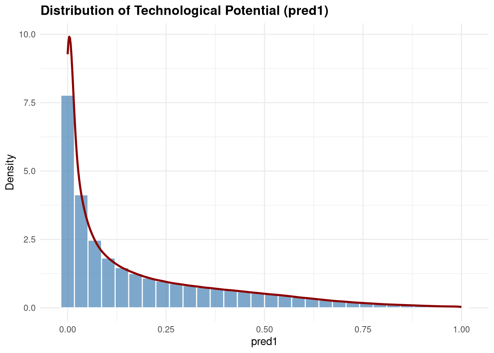
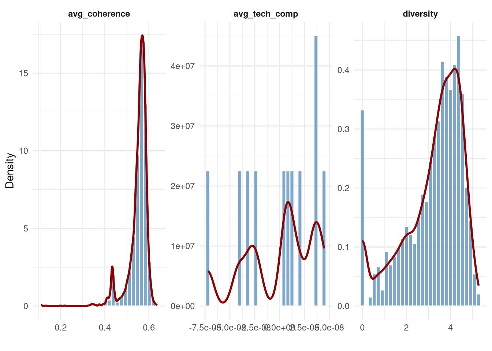
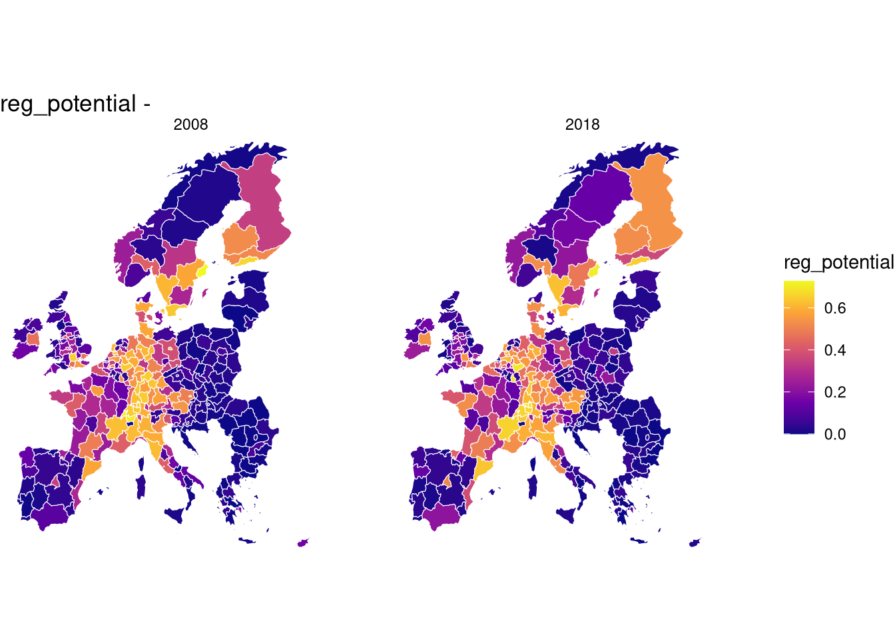
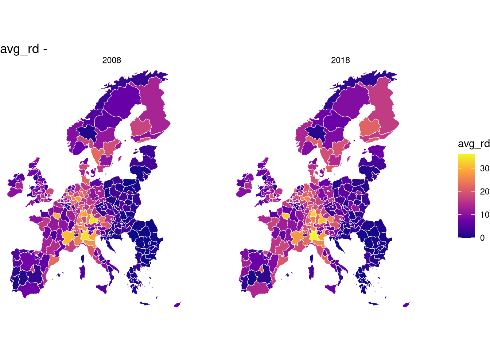
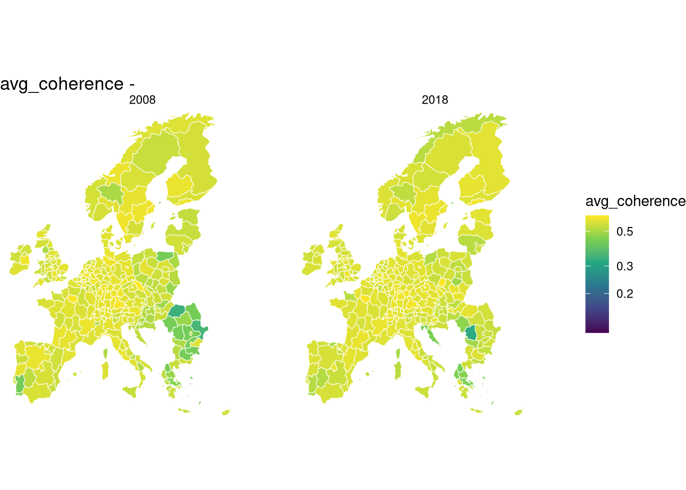

%%{init: {'theme':'base', 'themeVariables': {'fontSize':'8px'}, 'themeCSS': 'foreignObject { padding: 2px !important; } .cluster-label { font-size: 7px !important; }'}}%%
graph TB
subgraph " "
R[Region]
T[Technology]
end
subgraph "Region-Specific"
RL[Technological<br/>Landscape]
RC[Regional<br/>Complexity]
end
subgraph "Shared Characteristics"
COH[Coherence]
POT[Potential]
end
subgraph "Technology-Specific"
POS[Position in<br/>FITS Network]
TC[Technology<br/>Complexity]
end
R --> RL
R --> RC
R --> COH
R --> POT
T --> POS
T --> TC
T --> COH
T --> POT
style R fill:#e1f5ff
style T fill:#ffe1f5
style COH fill:#fff4e1
style POT fill:#fff4e1
4 Empirical Design
The preceding chapters established that regional technological diversification requires contextual understanding that mainstream relatedness measures cannot provide. Our methodological contribution: Regional Technological Potential, Feature Importance Technology Space, and the Coherence measure, captures endogenous context: the complex interactions between regional technology portfolios and the technology characteristics. We also highlighted why these measures are useful conceptually, and argued how traditional linear density measures obscure such complex interactions. However, endogenous context alone is insufficient. Regional economies are part of national institutional environments as well as spatial networks that could shape which opportunities translate into diversification possibilities.
This chapter extends our framework to incorporate exogenous context. We examine how national entrepreneurial ecosystems contribute to regional potential, and investigate whether regional potential exhibits spatial dependence—do neighbouring regions’ outcomes and characteristics influence focal region possibilities?
Our empirical strategy addresses four interconnected elements:
- Technology-region linkages: How network position in FITS affects potential
- Knowledge infrastructure alignment: How coherence moderates these effects
- National context: How entrepreneurial ecosystem characteristics shape regional possibilities
- Spatial dynamics: How neighbouring regions influence focal region outcomes
These elements correspond directly to our research questions and guide the two complementary analyses that follow. These analyses are designed to explain variation in regional potential (predicted feasibility) rather than realized entry outcomes. However, we also compare how potential and relatedness density contribute to the entry outcome as a secondary benchmark. Throughout, our focus is on the capability-based opportunity structure implied by regional portfolios and technological requirements, not on observed diversification decisions. Albeit this focus might limit the interpretability of our results and we discuss this in the subsequent chapters.
4.1 Conceptual Framework
4.1.1 The Structure of Context
The relationship between regions and technologies operates through distinct yet interconnected characteristics spanning multiple analytical levels.
At the technology level, each technology occupies a position within the FITS network. Some bridge otherwise disconnected domains, functioning as general purpose technologies (high betweenness). Others receive predictive importance from many technologies, representing key enabling technologies that multiple domains depend upon (high authority). Still others predict many downstream technologies, serving as foundational capabilities that enable subsequent development (high hub). These structural positions represent different types of opportunities with different capability requirements.
At the region level, each region possesses a technological portfolio characterised by its breadth, complexity, and network positioning. Regions also exist within national institutional environments and spatial neighborhoods that provide the broader context for capability development.
The critical intersection occurs at the region-technology dyad. Here, two properties emerge from the interaction between regional capabilities and technological requirements:
- Coherence: The alignment between a technology’s FITS embeddedness and the region’s portfolio embeddedness, i.e: whether the region possesses complementary knowledge infrastructure for that specific technology.
- Potential: The estimated probability of future specialisation (RTA ≥ 1) that a region will have in a given technology. The potential a region has in a technology can be considered as metric of feasibility.
This dyadic relationship is nested within broader hierarchies. Spatially, neighbouring regions’ characteristics create spillover effects through knowledge diffusion and demonstration. Nationally, the entrepreneurial ecosystem provides institutional conditions that affect all regions within a country.
Crucially, coherence serves dual roles: as a direct predictor of potential and as a moderator of network position effects. Technologies occupying central network positions yield differential regional impacts depending on industrial alignment—high coherence regions can leverage well-connected technologies, while low coherence regions may struggle despite favourable network positions. This moderation captures the contextual contingency at the heart of our argument.
4.1.2 From Concepts to Analysis
This conceptual structure implies two complementary analyses operating at different aggregation levels:
Analysis 1 examines technology-region-year observations to test how network position, coherence, and national context shape potential. This addresses H2 (coherence moderates network effects) and H3 (national ecosystems affect potential).
Analysis 2 examines region-year panels to test whether regional potential exhibits spatial dependence beyond what regional characteristics explain. This addresses H4 (spatial spillovers of outcomes and characteristics).
Both analyses take potential as outcome but address distinct mechanisms. Analysis 1 isolates technological and institutional determinants at the dyadic level. Analysis 2 captures geographic spillovers that the technology-level analysis—which treats regions as independent—cannot identify.
%%{init: {'theme':'base', 'themeVariables': {'fontSize':'9px'}}}%%
graph TB
subgraph Country["Country Level"]
GEI[National Entrepreneurial<br/>Ecosystem]
end
subgraph Region["Region Level"]
NEIGH[Neighboring Regions'<br/>Avg Coherence & Potential]
REG[Focal Region]
end
subgraph Dyad["Region-Technology Dyad"]
COH[Coherence<br/>Network-based Fit]
POT[Entry Potential]
end
subgraph Tech["Technology Level"]
NET[Network Position<br/>Betweenness, Eigenvector]
COMP[Technology Complexity]
end
GEI -.-> POT
NEIGH --> POT
REG --> COH
NET --> POT
COMP --> POT
COH -->|Moderates| POT
NET -.->|Moderated by| COH
style Country fill:#f0f0f0,stroke:#999
style Region fill:#e1f5ff,stroke:#0066cc
style Dyad fill:#fff4e1,stroke:#ff9900
style Tech fill:#ffe1f5,stroke:#cc0066
style POT fill:#ffcc00,stroke:#996600,stroke-width:2px
Throughout, we explain variation in predicted feasibility rather than observed entry. Potential captures what regional portfolios enable given technological requirements; actual entry conflates capability with strategic choice, market conditions, and stochastic factors. By focusing on regional potential, we isolate the capability-based opportunity structure that precedes and constrains observed diversification decisions which policy can address.
4.2 Data and Variables
Our dataset comprises European patent applications from the EPO/PATSTAT database, covering 641 technologies (4-digit IPC classes) across 345 NUTS2 regions in 30 European countries over 11 years (2008–2018). After filtering for data availability, Analysis 1 includes approximately 1.25 million technology-region-year observations. Analysis 2 aggregates to approximately 3,800 region-year observations.
Our main outcome is the Regional Technological Potential \({p}_{r,t,y}\), which is the Random Forest-predicted probability that region \(r\) develops specialisation in technology \(t\) by year \(y\), given its portfolio four years prior. As developed in the methodology chapter, this measure captures non-linear, region-specific diversification feasibility. Values are bounded between 0 and 1, with higher values indicating greater predicted likelihood of future specialisation.
For Analysis 2, we aggregate our outcome to regional means:
\[{P}_{r,y} = \frac{1}{|\mathcal{T}|} \sum_{t \in \mathcal{T}} {p}_{r,t,y}\]
We organise variables by analytical level:
Technology-region level (dyadic):
| Variable | Description |
|---|---|
| Patents | patent count in technology \(t\) for region \(r\) |
| Coherence | Cosine similarity between technology’s FITS embeddedness and region’s portfolio embeddedness; interpreted as alignment between regional knowledge infrastructure and technology requirements |
| Distance | Shortest network path from any technology in which the region specialises to the focal technology; captures region-specific accessibility |
Technology level:
| Variable | Description | Interpretation |
|---|---|---|
| Betweenness | Betweenness centrality in FITS | General purpose technologies bridging domains |
| Authority | Authority score (HITS algorithm) | Key enabling technologies predicted by many others |
| Hub | Hub score (HITS algorithm) | Foundational technologies that predict many others |
| Category | IPC section (A–H) | Technology domain |
These three centrality measures exhaust the main structural roles in directed networks: bridging (betweenness), receiving importance (authority), and conferring importance (hub).
Country level:
| Variable | GEI Component | Description |
|---|---|---|
| x8 | Human capital | Education and training for entrepreneurship |
| x9 | Competition | Market dynamics and competitive intensity |
| x10 | Product innovation | New product development capacity |
| x11 | Process innovation | Technology absorption and adaptation |
| x12 | High growth | Scaling and growth orientation |
| x13 | Internationalisation | Export orientation and global integration |
| x14 | Risk capital | Venture financing availability |
We incorporate Global Entrepreneurship Index components capturing institutional and resource dimensions of national ecosystems. Data availability constrains our selection to components x8–x14, which span human capital, competitive intensity, innovation orientation, and financing conditions—factors most directly relevant to regional capability development and technology adoption.
Region level (for Analysis 2):
| Variable | Definition |
|---|---|
| Average coherence | Average coherence across technologies |
| Average betweenness | Average betweenness of the region’s portfolio |
| Average authority | Average authority score of the region’s portfolio |
| Average hub | Average hub centrality of the region’s portfolio |
| Unique | Missing Pct. | Mean | SD | Min | Median | Max | |
|---|---|---|---|---|---|---|---|
| year | 11 | 0 | 2013.00 | 3.16 | 2008.00 | 2013.00 | 2018.00 |
| pred1 | 1619198 | 0 | 0.18 | 0.21 | 0.00 | 0.09 | 1.00 |
| patent_n | 593 | 0 | 1.20 | 12.59 | 0.00 | 0.00 | 2377.00 |
| coherence | 1985135 | 0 | 0.55 | 0.22 | 0.00 | 0.57 | 1.00 |
| betweenness | 3156 | 0 | 0.00 | 0.00 | 0.00 | 0.00 | 0.05 |
| authority | 7039 | 0 | 0.34 | 0.19 | 0.00 | 0.29 | 1.00 |
| hub | 5529 | 0 | 0.06 | 0.12 | 0.00 | 0.01 | 1.00 |
| degree_in | 7046 | 0 | 0.65 | 0.16 | 0.00 | 0.64 | 1.00 |
| degree_out | 5534 | 0 | 0.11 | 0.18 | 0.00 | 0.02 | 1.00 |
| degree_total | 7047 | 0 | 0.20 | 0.15 | 0.00 | 0.13 | 1.00 |
| eigenvector | 7051 | 0 | 0.10 | 0.16 | 0.00 | 0.04 | 1.00 |
| rawdist | 5637 | 4 | 132.61 | 242.27 | 26.46 | 90.94 | 2883.96 |
| relatedness_density | 5537 | 4 | 9.42 | 8.04 | 0.00 | 7.81 | 100.00 |
| reg_comp | 3087 | 4 | -0.00 | 1.00 | -12.98 | 0.08 | 5.44 |
| tech_comp | 6833 | 4 | -0.00 | 1.00 | -23.15 | 0.01 | 4.63 |
| entry | 3 | 18 | 0.06 | 0.23 | 0.00 | 0.00 | 1.00 |
| x8_human_capital | 200 | 21 | 0.51 | 0.19 | 0.14 | 0.48 | 1.00 |
| x9_competition | 192 | 21 | 0.66 | 0.25 | 0.17 | 0.76 | 1.00 |
| x10_product_innovation | 196 | 21 | 0.58 | 0.21 | 0.06 | 0.60 | 1.00 |
| x11_process_innovation | 199 | 21 | 0.67 | 0.18 | 0.22 | 0.67 | 1.00 |
| x12_high_growth | 205 | 21 | 0.51 | 0.18 | 0.12 | 0.53 | 0.95 |
| x13_internationalization | 186 | 21 | 0.67 | 0.19 | 0.23 | 0.70 | 1.00 |
| x14_risk_capital | 193 | 21 | 0.66 | 0.16 | 0.19 | 0.67 | 1.00 |
| CC.EST | 330 | 0 | 1.17 | 0.77 | -0.38 | 1.46 | 2.44 |
| GE.EST | 330 | 0 | 1.20 | 0.57 | -0.36 | 1.42 | 2.24 |
| PV.EST | 330 | 0 | 0.62 | 0.40 | -0.47 | 0.60 | 1.51 |
| RQ.EST | 330 | 0 | 1.27 | 0.45 | 0.14 | 1.27 | 2.04 |
| RL.EST | 330 | 0 | 1.24 | 0.59 | -0.16 | 1.44 | 2.12 |
| VA.EST | 330 | 0 | 1.18 | 0.31 | 0.31 | 1.25 | 1.74 |
| Unique | Missing Pct. | Mean | SD | Min | Median | Max | |
|---|---|---|---|---|---|---|---|
| year | 11 | 0 | 2013.00 | 3.16 | 2008.00 | 2013.00 | 2018.00 |
| reg_potential | 1565 | 0 | 0.22 | 0.23 | 0.00 | 0.12 | 0.76 |
| patent_count | 1249 | 0 | 776.19 | 1985.54 | 0.00 | 186.00 | 27222.00 |
| n_techs | 368 | 0 | 90.03 | 92.69 | 0.00 | 59.00 | 496.00 |
| n_specialized | 210 | 0 | 59.81 | 49.01 | 0.00 | 50.00 | 241.00 |
| diversity0 | 367 | 0 | 3.70 | 1.58 | 0.00 | 4.08 | 6.21 |
| diversity | 2851 | 0 | 3.21 | 1.33 | 0.00 | 3.58 | 5.28 |
| avg_coherence | 3097 | 0 | 0.55 | 0.04 | 0.11 | 0.56 | 0.64 |
| avg_tech_comp | 11 | 0 | -0.00 | 0.00 | -0.00 | 0.00 | 0.00 |
| entry_rate | 1946 | 0 | 0.06 | 0.05 | 0.00 | 0.05 | 0.26 |
| avg_rd | 3083 | 0 | 9.42 | 7.74 | 0.00 | 7.97 | 38.71 |
| avg_dist | 11 | 0 | 132.61 | 13.50 | 107.08 | 137.50 | 151.91 |
| avg_betweenness | 3080 | 0 | 0.00 | 0.00 | 0.00 | 0.00 | 0.04 |
| avg_eigenvector | 3087 | 0 | 0.07 | 0.04 | 0.00 | 0.06 | 0.52 |
| med_betweenness_spec | 2106 | 0 | 0.00 | 0.00 | 0.00 | 0.00 | 0.04 |
| med_eigenvector_spec | 2554 | 0 | 0.03 | 0.03 | 0.00 | 0.02 | 0.52 |
| med_betweenness_exist | 1925 | 0 | 0.00 | 0.00 | 0.00 | 0.00 | 0.04 |
| med_eigenvector_exist | 2455 | 0 | 0.03 | 0.03 | 0.00 | 0.02 | 0.52 |
| pct_high_between_spec | 124 | 0 | 0.46 | 0.12 | 0.00 | 0.50 | 0.50 |
| pct_high_eigen_spec | 109 | 0 | 0.46 | 0.12 | 0.00 | 0.50 | 0.50 |
| pct_high_between_exist | 197 | 0 | 0.46 | 0.12 | 0.00 | 0.50 | 0.50 |
| pct_high_eigen_exist | 183 | 0 | 0.46 | 0.12 | 0.00 | 0.50 | 0.50 |


| pred1 | rawdist | patent_n | coherence | betweenness | eigenvector | authority | hub | relatedness_density | reg_comp | tech_comp | entry | |
|---|---|---|---|---|---|---|---|---|---|---|---|---|
| pred1 | 1 | . | . | . | . | . | . | . | . | . | . | . |
| rawdist | -.07 | 1 | . | . | . | . | . | . | . | . | . | . |
| patent_n | .24 | -.02 | 1 | . | . | . | . | . | . | . | . | . |
| coherence | .40 | -.19 | .11 | 1 | . | . | . | . | . | . | . | . |
| betweenness | .23 | -.10 | .05 | .40 | 1 | . | . | . | . | . | . | . |
| eigenvector | -.15 | .08 | -.02 | -.21 | -.17 | 1 | . | . | . | . | . | . |
| authority | -.13 | -.03 | -.06 | -.18 | -.25 | -.06 | 1 | . | . | . | . | . |
| hub | .20 | -.06 | .12 | .33 | .15 | -.06 | .10 | 1 | . | . | . | . |
| relatedness_density | .69 | -.00 | .22 | .12 | .02 | -.02 | -.01 | .01 | 1 | . | . | . |
| reg_comp | .34 | .00 | .09 | .03 | -.01 | .01 | .01 | -.00 | .48 | 1 | . | . |
| tech_comp | -.20 | .05 | -.11 | -.28 | -.24 | -.01 | -.02 | -.30 | -.05 | -.00 | 1 | . |
| entry | .29 | -.02 | .26 | .13 | .07 | -.05 | -.05 | .07 | .28 | .09 | -.08 | 1 |
| reg_potential | patent_count | n_techs | diversity | avg_coherence | avg_betweenness | avg_eigenvector | entry_rate | avg_rd | |
|---|---|---|---|---|---|---|---|---|---|
| reg_potential | 1 | . | . | . | . | . | . | . | . |
| patent_count | .51 | 1 | . | . | . | . | . | . | . |
| n_techs | .91 | .75 | 1 | . | . | . | . | . | . |
| diversity | .74 | .37 | .74 | 1 | . | . | . | . | . |
| avg_coherence | .52 | .30 | .54 | .77 | 1 | . | . | . | . |
| avg_betweenness | -.05 | -.09 | -.06 | .13 | .20 | 1 | . | . | . |
| avg_eigenvector | .20 | .17 | .23 | .27 | .28 | .08 | 1 | . | . |
| entry_rate | .76 | .39 | .78 | .78 | .52 | -.00 | .21 | 1 | . |
| avg_rd | .91 | .58 | .95 | .85 | .59 | -.03 | .22 | .86 | 1 |



4.3 Technology-Region Determinants of Potential
We examine what explains variation in Technological Potential across region-technology-year observations. Specifically: Do FITS network characteristics predict potential? Does coherence moderate these relationships? Do national ecosystem factors contribute beyond regional and technological characteristics?
We estimate hierarchical models that account for the nested structure of observations. Technologies differ in inherent characteristics. Regions differ in portfolio composition. Countries differ in institutional environments. Years capture common temporal dynamics. Failing to account for this structure would conflate within-group and between-group variation.
We adopt Generalized Additive Models (GAM) with beta-distributed errors. Beta regression is appropriate because potential is bounded between 0 and 1 with continuous density—standard linear regression would produce predictions outside this range and mischaracterise the error distribution.
Random effects at each level absorb unobserved heterogeneity while allowing estimation of level-specific predictors. We specify random effects for year, technology, and region. A fully nested specification (region within country) would better isolate national-level GEI effects but proved computationally infeasible given our sample size of 1.25 million observations. The regional random effect therefore captures combined geographic variation, and GEI coefficients should be interpreted as associations conditional on this heterogeneity.
We estimate two complementary specifications consistent with our pipeline: (i) fixed-effects dyad models as a robustness check (region-technology (rt) dyad and year fixed effects), and (ii) hierarchical beta-GAM models as our primary approach, estimated with random-effect smooths.
The general form is:
\[g(\mu_{r,t,y}) = \mathbf{X}_{r,t,y}\boldsymbol{\beta} + f_{\text{year}} + f_{\text{region}} + f_{\text{tech}}\]
where \(g(\cdot)\) is the logit link function, \(\mu_{r,t,y} = E[\text{Potential}_{r,t,y}]\), and \(f_{\cdot}\) are random effect smooths implemented as penalised ridge regression (equivalent to random intercepts in mixed models).
We estimate two complementary beta-GAM specifications:
Interaction model (tests H2): includes patents, distance, regional and technological complexity, and interaction terms between FITS network position and coherence (betweenness × coherence, authority × coherence, hub × coherence), with random effects for year, region, and technology.
Hierarchical model with national context (tests H3): adds GEI components (x8–x14) and category controls, and includes a country random effect, without interaction terms.
Main effects:
- \(\beta_1 \text{patents}_{r,t,y}\): Regional knowledge stock in focal technology
- \(\beta_2 \text{coherence}_{r,t,y}\): Portfolio-technology alignment
- \(\beta_3 \text{distance}_{r,t,y}\): Network accessibility from regional portfolio
- \(\beta_4 \text{betweenness}_t\): Bridging position (GPT)
- \(\beta_5 \text{authority}_t\): Enabling technology status (KET)
- \(\beta_6 \text{hub}_t\): Foundational technology status
Interactions (testing H2):
- \(\beta_7 (\text{coherence} \times \text{betweenness})\)
- \(\beta_8 (\text{coherence} \times \text{authority})\)
- \(\beta_9 (\text{coherence} \times \text{hub})\)
- \(\beta_{10} (\text{coherence} \times \text{distance})\)
National context (testing H3):
- \(\sum_{k=8}^{14} \delta_k \text{GEI}_k\)
Controls:
- \(\gamma_c \text{category}_t\): Technology domain fixed effects
Random effects:
- \(f_{\text{year}}\), \(f_{\text{region}}\), \(f_{\text{tech}}\)
Estimation uses bam() from the mgcv package, which implements discretised covariate methods for computational efficiency with large datasets.
The interaction terms test H2 directly. A positive coefficient on coherence × betweenness indicates that bridging technologies (GPTs) yield higher potential specifically when regional portfolios align with the bridged domains. This supports the contextual argument: structural opportunity requires complementary capabilities. Similar interpretation applies to authority and hub interactions.
The GEI coefficients test H3. Positive effects indicate that national ecosystem characteristics enable higher regional potential, conditional on technological and portfolio factors. For instance, a positive coefficient on human capital suggests that regions in countries with stronger educational infrastructure exhibit higher potential for given technology-portfolio configurations.
4.4 Spatial Dynamics of Regional Potential
We shift from technology-region observations to region-year panels to examine whether regional potential exhibits spatial structure. The technology-level analysis treats regions as independent observations. But regions exist in geographic space where knowledge diffuses, competition operates, and demonstration effects propagate. Analysis 2 tests whether potential clusters geographically and whether neighbors’ outcomes and characteristics influence focal region possibilities.
Before specifying spatial models, we verify that spatial structure exists. Moran’s I statistics reveal persistent positive spatial autocorrelation across all years (I ≈ 0.44–0.51, p < 0.001). Regional potential clusters geographically—high-potential regions systematically neighbor high-potential regions.
To discriminate between competing spatial specifications, we apply Baltagi-Song-Koh LM tests designed for panel data.
The robust LM-lag test (350.4, p < 0.001) strongly rejected the null of no spatial lag dependence. The robust LM-error test (4.1, p = 0.042) was only marginally significant after controlling for spatial lag. This indicates that spatial dependence operates primarily through neighbors’ outcomes rather than through spatially correlated errors—regions with high-potential neighbors tend to exhibit higher potential themselves.
| statistic | p.value | parameter | method | alternative |
|---|---|---|---|---|
| 616.271281 | 4.838869e-136 | 1 | LM test for spatial lag dependence | spatial lag dependence |
| 271.667219 | 4.915301e-61 | 1 | LM test for spatial error dependence | spatial error dependence |
| 348.251774 | 1.018224e-77 | 1 | Locally robust LM test for spatial lag dependence sub spatial error | spatial lag dependence |
| 3.647713 | 5.614626e-02 | 1 | Locally robust LM test for spatial error dependence sub spatial lag | spatial error dependence |
Based on these diagnostics, we adopt a Spatial Autoregressive (SAR) panel model with random effects as our primary specification.
We construct spatial weights using k-nearest neighbors (k = 5) based on geographic centroids:
\[w_{ij} = \begin{cases} 1/k & \text{if } j \in \text{knn}_k(i) \\ 0 & \text{otherwise} \end{cases}\]
with row-standardisation such that \(\sum_j w_{ij} = 1\) for each region \(i\).
We estimate three specifications to isolate different spatial mechanisms:
SAR (testing H4a):
\[{P}_{r,y} = \rho \mathbf{W} {P}_{r,y} + \mathbf{X}_{r,y}\boldsymbol{\beta} + \alpha_r + \epsilon_{r,y}\]
Tests whether neighbors’ potential affects focal region (outcome spillovers). A significant \(\rho > 0\) indicates that high-potential neighbors are associated with higher focal region potential, suggesting knowledge spillovers or demonstration effects.
SEM (robustness):
\[P_{r,y} = \mathbf{X}P_{r,y}\boldsymbol{\beta} + \alpha_r + uP_{r,y}, \qquad u_{r,y} = \delta \mathbf{W} u_{r,y} + \epsilon_{r,y}\] where \(\delta\) captures spatial correlation in the error term (unobserved spatially correlated shocks).
The spatial models test H4 directly by examining whether regional technological potential is influenced by neighboring regions’ outcomes and characteristics.
In the SAR specification, the spatial lag coefficient \(\rho\) captures outcome spillovers. A positive and significant \(\rho\) indicates that regions tend to exhibit higher potential when neighboring regions also display high potential. This is consistent with knowledge diffusion, demonstration effects, and interregional learning, implying that capability-based opportunity structures are not purely local but propagate across space (H4a).
Regional controls (technological complexity and patenting intensity) ensure that spatial dependence is not driven by simple similarities in regional size or diversification. When \(\rho\) remains significant conditional on these controls, spatial interdependence reflects genuine spillovers rather than compositional effects.
The SEM specification tests an alternative mechanism. A significant spatial error parameter \(\delta\) (sometimes also referred to as \(\lambda\)) would indicate that similarities in regional potential arise from unobserved spatially correlated factors, such as shared institutional environments or common shocks, rather than direct interaction between neighbouring regions.
Comparing SAR and SEM results allows us to distinguish between interactive spillovers (neighbours’ outcomes matter) and correlated environments (neighbors share unobserved conditions).